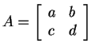
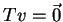
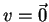

| Questão | Valor | Nota | Revis. | |||||
| 1 | 2.5 | |||||||
| 2a | 0.5 | |||||||
| 2b | 0.5 | |||||||
| 2c | 0.5 | |||||||
| 2d | 0.5 | |||||||
| 3a | 0.5 | |||||||
| 3b | 0.5 | |||||||
| 3c | 1.0 | |||||||
| 3d | 0.5 | |||||||
| 3e | 0.5 | |||||||
| 4a | 1.5 | |||||||
| 4b | 0.5 | |||||||
| 4c | 1.0 | |||||||
| Total | 10.5 |
Marque no quadro as respostas da primeira questão. Não é necessário justificar esta questão.
ATENÇÃ0: resposta errada vale ponto negativo!, a questão pode ter nota negativa!
| Para uso exclusivo do professor | ***** | ***** |
Certas: |
||
Erradas: |
||
***** |
Total | |
1) Decida se cada afirmação a seguir é verdadeira ou falsa e marque com caneta sua resposta no quadro abaixo. Atenção: responda todos os itens, use "N = não sei" caso você não saiba a resposta. Cada resposta certa vale 0.3, cada resposta errada vale -0.2, cada resposta N vale 0. Respostas confusas e ou rasuradas valerão -0.2.
| Itens | V | F | N | |
| 1.a | ||||
| 1.b | ||||
| 1.c | ||||
| 1.d | ||||
| 1.e | ||||
| 1.f | ||||
| 1.g | ||||
| 1.h | ||||
| 1.i |
1.a) Se

e existem vetores u e w tais que Au=2u e Aw=-w,
então a soma dos autovalores de A6 é igual a 63.
1.b) A distância entre o plano de equação x+y+z=0 e o plano
de equação x+y+z=1 é igual a 1.
1.c) A reta de equações x=y=z é paralela ao plano
de equação 2x-y-z=3.
1.d) O volume do paralelepípedo formado pelos vetores
 ,
,
 e
e
 é igual a 3.
é igual a 3.
1.e)
É possível encontrar dois vetores u e v não nulos
no plano tais que
 .
.
1.f) Se u, v e w são três vetores de
perpendiculares entre si, então existem  ,
,
 e números reais não nulos tais que
e números reais não nulos tais que
 .
.
1.g) Seja T uma matriz ortogonal. Então se ,
então
.
1.h) Se -1, 1 e 1 (isto é, 1 tem multiplicidade 2)
são os autovalores de uma matriz A  ,
então A representa um espelhamento com relação a um plano.
,
então A representa um espelhamento com relação a um plano.
1.i) Se R é uma rotação de 90o em
e se unão pertence ao eixo de rotação, então
 ,
isto é, u e R(u) são ortogonais.
,
isto é, u e R(u) são ortogonais.
2) Considere as retas r e s definidas pelas equações:
2.a) Determine uma equação paramétrica de r.
2.b) Determine uma equação cartesiana de s, isto é,
escreva s como interseção de dois planos dados em equações
cartesianas.
2.c) Estude a posição relativa de r e s.
2.d) Se a sua resposta no item (2.c) foi reversas ou paralelas
calcule a distância entre r e s, e se foi se intersectam
determine a equação cartesiana do plano que contém as retas r e s.
3)
Considere
 .
.
3.a) Estude se  é uma base de
.
é uma base de
.
3.b) Considere uma transformação linear A de
em
verificando
3.c) Determine a matriz de A na base canônica.
3.d) Determine um autovalor e um autovetor (associado ao
autovalor encontrado) de A.
3.e) Encontre uma base onde a matriz de A é da forma
4)
Considere a matriz

4.a) Determine a, b, c e d para que P represente uma projeção ortogonal em um plano. Determine a equação do plano de projeção.
4.b)
Considere agora a matriz
Determine os autovalores de A.
4.c)
Finalmente
considere a matriz